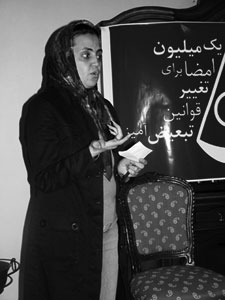

پذيرش > سایت نوشته ها > اگر قوانین کمی برابر تر بودند بند نسوان زندان اوین چه تغییری می کرد
 نامه محبوبه کرمی از زندان اوین-31 تیر 1387 نامه محبوبه کرمی از زندان اوین-31 تیر 1387

 اگر قوانین کمی برابر تر بودند بند نسوان زندان اوین چه تغییری می کرد اگر قوانین کمی برابر تر بودند بند نسوان زندان اوین چه تغییری می کرد
31 تیر 1387 - مدرسه فمینیستی - نسخه قابل چاپ
مدرسه فمینیستی: بیش از 5 هفته از زندانی شدن محبوبه کرمی از اعضای کمپین یک میلیون امضاء می گذرد. محبوبه در 23 خرداد ماه هنگامی که رهگذر اتفاقی خیابان ولی عصر تهران بود. دستگیر شد. در آن ساعت از روز در پارک ملت تجمعی در اعتراض به مفاسد اقتصادی در جریان بود. این مطلب را محبوبه در زندان نوشته است و تلفنی آن را برای ما خوانده است.
اگر قوانین کمی برابر تر بودند بند نسوان زندان اوین چه تغییری می کرد
قلمم را به دست می گیرم تا از آنچه در این یک ماه بر من گذشته است، بنویسم. روزگار سختی است؛ تنها و بی کس در گوشه ای از راهروی زندان نشسته ام و می خواهم بنویسم از زنانی که در این روزها با آنها همدم و هم صحبت شدم. از فاطمه و اشرف و پروین و ریحانه که به خاطر اشتباهات دیگران باید مجازات شوند. هرگز فراموش نمی کنم آن روز را که در سلول انفرادی تنها نشسته بودم و به مشکلات خودم فکر می کردم. به یاد مادر بیمارم افتادم که در شرف عمل جراحی بود. به یاد پدر سالمندم افتادم که الان در گوشه ای از خانه چشم به در دوخته تا تنها دخترش، محبوبه اش به خانه بازگردد. او نمی داند که دخترش به خاطر دفاع از حق دیگران باید در گوشه زندان باشد.
گریه امانم نمی دهد اشک به پهنای صورتم سرازیر می شود. ناگهان دستی مهربان، موهایم را نوازش می دهد. سرم را بلند می کنم. دختری زیبا با موهای بلند کنارم نشسته است. می پرسد:« چرا دلتنگی می کنی؟» می گویم: نگران حال مادرم هستم. اشک در چشمانش حلقه می زند و می گوید: «ای کاش من هم مادری داشتم» از او می پرسم مادرت فوت کرده؟ سرش را تکان می دهد:« ای کاش فوت کرده بود. مادرم خودش را دار زده است.» از شنیدن ماجرای مادر فاطمه بسیار متاثر می شوم. در حال صحبت با فاطمه بودم که مرا برای بازجویی مجدد صدا می کنند. وقتی پس از 4 ساعت بازجویی به سلول برگشتم، فاطمه نبود. سلولش را عوض کرده بودند.
پس از چند روز ما را جا به جا کردند. یک روز در هواخوری انفرادی فاطمه را دیدم در حال کشیدن سیگاری بود. به کنارش رفتم به خاطر من سیگارش را خاموش کرد. تشکر کردم.
از فاطمه می خواهم کمی راجع به مادرش حرف بزند، چرا او خود را به دار آویخته است؟
فاطمه از سرنوشت تلخ مادرش می گوید. از ازدواج ناموفق و ناخواسته مادر در سن 14 سالگی، این که پدر و مادر مادرش فوت کرده بودند و او با برادرانش زندگی می کرد. این که در مراسم خواستگاری مادر ، مرد جوانی را به او به عنوان شوهر آینده نشان می دهند ولی در سر سفره عقد برادر بزرگتر آن مرد جوان به عنوان داماد می نشیند. .این که ازدواج مادرش از روز اول با فریب شروع شده است. این که پدر فاطمه 35 سال از مادرش بزرگتر بوده است. این که حاصل ازدواج پدر و مادرش دو پسر و یک دختر است که مادرش به زور کتک و شلاق هر سه را حامله شده است. این که مادرش سالها برای طلاق تلاش کرده اما و موفق نشده است. این که زندگی با مردی مثل پدرش جز افسردگی و بیماری برای مادرش بهره ای نداشته است. فاطمه می گوید مادرش از مدتها قبل از آن روز شوم به همه می گفت که روزی خودکشی خواهد کرد.:«روزی به خانه آمدم و مادرم را بالای دار دیدم.» فاطمه قادر به ادامه صحبت نیست و هر دو زار زار گریه می کنیم.
سعی می کنم با ماموران زندان ارتباط برقرار کنم. برخی از کمک زندانبان ها ، زنان زندانی دارای حبس سنگین یا زیر اعدامند. خانمی خیلی به ما محبت داشت و حتا به مادرم زنگ می زد و خبر سلامتی مادر را به من می داد. او متهم به قتل شوهر است. شوهری معتاد و بیکار. زن با کار در خیاط خانه سعی می کرده است خرج زندگی را در آورد. اما بیکاری، اعتیاد و در خانه بودن همیشگی شوهر ، همیشه موجب جنگ و دعوا بوده است. مرد در یکی از این دعواها کشته می شود. می اندیشم به راستی چنین زن مهربانی که با من که دختر غریبه ای برای او هستم چنین مهربانی می کند، آیا اگر کمی شرایطش انسانی تر بود، آیا اگر قوانین از او که گرفتار مردی معتاد و خشن بود، حمایت بیشتری می کرد، سرنوشتش به این جا ختم می شد؟
روزی در هواخوری اشرف را می بینم . او هم متهم به قتل شوهر و زیر سنگسار است. اشرف دلیل بودنش در این جا را برایم می گوید. او می گوید شوهر بی غیرتی داشته است. او مردها را به خانه می آورد و اشرف را مجبور به رابطه با آن ها می کرد و پولش را در جیب می گذاشت و خرج می کرد.
به گفته اشرف، زندگی این چنینی برایش غیرقابل تحمل بوده است، مرد طلاقش را هم نمی داده است. اشرف برای رهایی از این وضعیت شوهرش را کشته است.
به قوانین تبعیض آمیزی می اندیشم که زنی را که شوهرش به مردان دیگر می فروشد، محکوم به سنگسار می کند. راستی آیا اشرف به میل خود با این مردان هم بستر می شده است که اکنون مسئولیت رابطه با آن ها را باید بپذیرد و به خاطرش مجازات شود. این زنان که در چنبر ناآگاهی و فقر و بدبختی اسیرند، چه روزنه ای برای بیرون آمدن از بن بستی که قوانین مردسالار برایشان رقم زده اند، دارند؟ راستی چرا زنان شوهر کش این چنین زیادند، چه چیزهایی باعث می شود که زنان به آخر خط برسند ، یا مانند مادر فاطمه خودشان را دار بزنند و یا مانند اشرف و پروین و بسیار زنان دیگر، به مرگ شوهرانشان راضی شوند؟
به اشرف می گویم اگر قوانین تبعیض آمیز روزی در کشور ما عوض شوند، جای امثال تو این جا نخواهد بود. اشرف می گوید باید به بند سه بیایی تا قصه زندگی زنانی مثل من را بشنوی.
من اما به سرنوشت خودم می اندیشم که تنها به جرم تلاش برای تغییر قوانینی که زندگی هزاران زن را به بن بست کشانده است، در گوشه ای از زندان اوین نگران مادری بیمار و پدری سالمند هستم که هر دو نیازمند حضور منند. قوانینی که اگر کمی انسانی تر بودند، بند نسوان زنان اوین شکلی دیگر داشت.
محبوبه کرمی/ بند نسوان زندان اوین/31 تیرماه 1387
مدرسه فمینیستی
ارسال به
بالاترین
،
توییتر
،
فریندفید
،
فیسبوک
در همين بخش :
 یک خبر تلخ؟ یک قانونشکنی؟ یک تصمیم بخشنامهای جدید؟ یک خبر تلخ؟ یک قانونشکنی؟ یک تصمیم بخشنامهای جدید؟
چرا بایست به سکسوالیته پرداخت؟ / نفیسه آزاد
آزارجنسی خانگی؛ «قربانی» نه، «نجات یافته»
زنان، بزرگترین بازندگان بهار عرب
سانسور از دیدگاه جنسیتی/الهه امانی
ديگر بخش ها :
طرح یک میلیون امضا
|
مقالات
|
سایت نوشته ها
|
اخبار
|
گزارش كمپين
|
گفت و گو
|
علیه سکوت
|
كوچه به كوچه
|
نامه های شما
|
گزارش ویژه
|
گفتگو با اعضا
|
ویژه سالگرد کمپین
|
تصویر برابری
|
دل آرام علی
|
تریبون
|
مقالات
|
تاریخ شفاهی
|
خارج از چارچوب
|
کتابخانه
|
درباره کمپین
|
کمپین در شهرها
|
کمپین در بند
|
صدای تغییر
|
ویژه 22 خرداد
|
لایحه حمایت از خانواده
|
گالری
|
عشا مومنی
|
امیر یعقوبعلی
|
خدیجه مقدم
|
راحله عسگری زاده و نسیم خسروی
|
پروین اردلان،جلوه جواهری، مریم حسین خواه، ناهید کشاورز
|
زینب پیغمبرزاده
|
سعیده امین، سارا ایمانیان، محبوبه حسین زاده، ناهید کشاورز و همایون نامی
|
احترام شادفر
|
نسیم سرابندی زاده،فاطمه دهدشتی
|
وبلاگ مهمان
|
پرونده خرم آباد
|
دستگیری ها
|
مریم مالک
|
پرستو اللهیاری
|
مهرنوش اعتمادی
|
سمیه رشیدی
|
Other Languages
|
همراهان
|
«فراخوان کمپین ده روز با بهاره هدایت»
| English
|